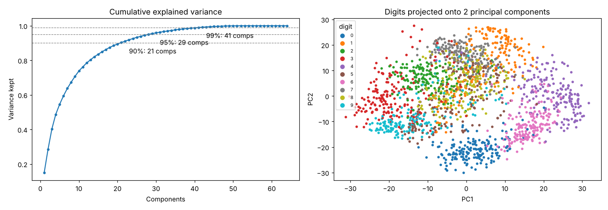

Principal Component Analysis
Rotates the data to find the few directions that capture most of its variation, so you can keep those and drop the rest.
Try it
Experiment: Lower the correlation to 0: no direction is special and PC1 keeps only about 50%. Raise it to 0.98 and one direction keeps almost everything.
The idea
Correlated features carry overlapping information. PCA finds new axes, the principal components, ordered by how much of the data’s spread they capture. The first component points along the direction of greatest variance; the second is perpendicular to it and captures the most of what remains.
In the demo, rotate the line yourself and watch the variance of the projected points. The maximum you can find is exactly PC1. Keeping the top few components compresses the data while keeping most of the information.
How it works, step by step
- Centre (and usually scale) each feature.
- Compute the covariance matrix: how features vary together.
- Find its eigenvectors (directions) and eigenvalues (variance along each direction).
- Keep the top components that explain enough variance (e.g. 95%) and project the data onto them.
Σ v = λ v → components v, variance λ
Explained variance ratio = λₖ / Σ λOn the repo’s Digits data, 29 of 64 pixel features keep 95% of the variance, and an SVM on those 29 still scores 99.2%.
Strengths and weaknesses
Strengths
- Reduces dimensions and noise, often with no loss in accuracy
- Removes correlation between features
- Speeds up later models
- Lets you plot high-dimensional data in 2-D
Weaknesses
- Components are mixtures of features, hard to interpret
- Captures only linear structure
- Sensitive to feature scaling and outliers
Use it when: Many correlated numeric features, visualisation, or speeding up a downstream model.
Avoid it when: You need to explain results in terms of the original features, or the structure is strongly non-linear.
In this repository
Dataset: Digits (1797 images, 64 pixel features)
Cutting 64 features to 29 loses no accuracy here: the SVM scores as well as on all 64.

from sklearn.decomposition import PCA
pca = PCA(n_components=0.95) # keep 95% of the variance
X_small = pca.fit_transform(X_scaled)
pca.explained_variance_ratio_Full code: models/10_pca. Train it on your own data with
python models/10_pca/train.py --data your.csv --target column.
Check yourself
PC1 is the axis along which projected points are most spread out.
Variance depends on units; scaling puts features on equal footing.
That is the main trade-off of PCA.
Answer all three correctly to mark this model as learned.